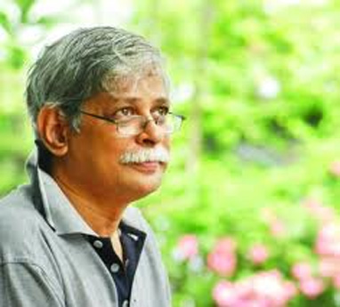
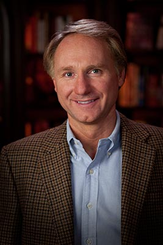

Favourite Authors
Bangladeshi Writers
HUMAYUN AHMED:
He was a Bangladeshi writer, dramatist, screenwriter, filmmaker, song writer, scholar, and lecturer. His breakthrough was his debut novel "Nondito Noroke" published in 1972. He wrote over 200 fiction and non-fiction books, all of which were bestsellers in Bangladesh.
 MUHAMMAD JAFAR IQBAL:
He is a Bangladeshi science fiction author, physicist, professor and activist. He is a professor of Computer Science and Engineering at Shahjalal University of Science and Technology. As of January 2018, he is currently the head of Electrical and Electronic Engineering department.
MOHAMMAD NAZIM UDDIN:
He is a writer and Translator of more than 26 novels..His original works are NEMESIS, CONTRACT, NEXUS, CONFESSION,JAAL, 1952: nichok kono number noy, KARACHI, RABINDRANATH EKHANE KOKHONO KHETE ASENNI and KEU KEU KATHA RAKHE. These six Thriller novels are highly acclaimed by the readers.
International Writers
 DAN BROWN:
He is an American author of thriller novels, most notably the Robert Langdon stories: Angels & Demons (2000), The Da Vinci Code (2003), The Lost Symbol (2009), Inferno (2013) and Origin (2017). His novels are treasure hunts set in a 24-hour period and feature the recurring themes of cryptography, keys, symbols, codes, and conspiracy theories. His books have been translated into 56 languages.
 J.K. ROWLING:
J.K. ROWLING:
She is a British novelist, philanthropist, film producer, television producer and screenwriter who is best known for writing the Harry Potter fantasy series. The books have won multiple awards, and sold more than 400 million copies, becoming the best-selling book series in history. They have also been the basis for a film series, over which Rowling had overall approval on the scripts and was a producer on the final films in the series.